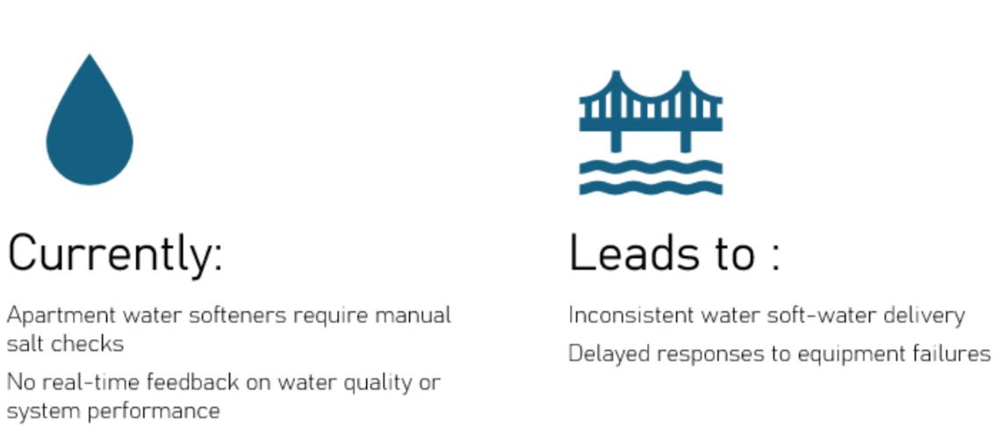
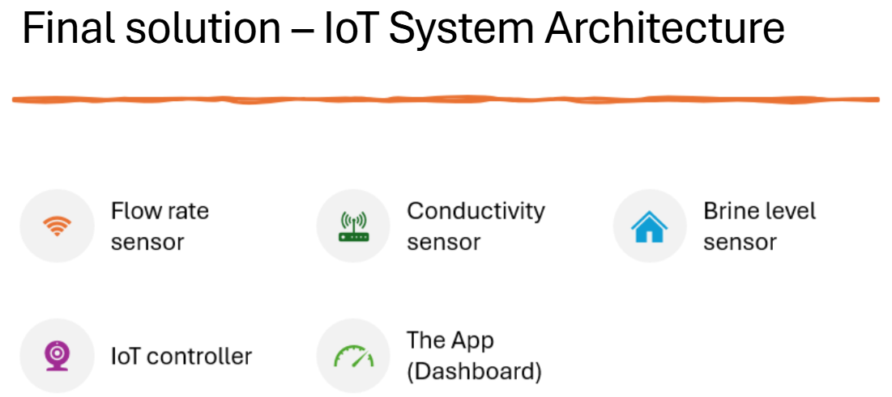
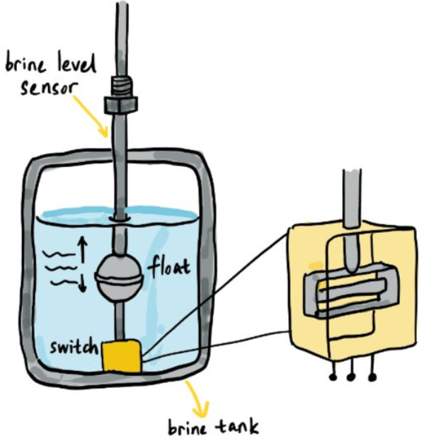

A systems-design project exploring how connected hardware sensors
and an interactive dashboard can help building management teams
monitor water-softening performance and identify potential
maintenance issues.
Building-level water hardness monitoring and dashboard usability
01 / Problem Framing
Understanding the Problem
Water hardness is a common issue in building management, affecting
both the efficiency of water systems and the longevity of appliances.
Hard water contains high levels of calcium and magnesium ions, which
can lead to scale buildup in pipes and fixtures, reducing water flow
and increasing maintenance costs. Understanding and managing water
hardness is crucial for ensuring optimal performance and sustainability
in building operations.
02 / Stakeholder Research
Stakeholders & Mapping the Process
Initially, our team approached the problem through the lens of primary
stakeholders: the immediate water users. However, we recognized that
this approach could make the solution less usable or accessible for
everyday users. We reconsidered our stakeholder focus before the
user-testing phase.
03 / Divergent Exploration
Brainstorming: Storyboarding & Sketching
Each team member developed a nine-step storyboard in Miro. The
storyboards were organized around three phases:
01. Connect
Building partnerships and planning.
02. Treat
Optimizing chemical water softening.
03. Reduce
Managing brine and waste.
Exploring a Centralized Approach
Initially, we considered a region-centralized approach that combined
three traditionally used methods to treat hard water, as circled in red.
Shifting to an Apartment-Specific Approach
We then shifted toward an apartment-specific approach. This offered
a more simplified and efficiently mapped-out model for user testing
in the later stages of our design sprint.

04 / Design Decision
Narrowing Down the Solution Approach
Following our brainstorming and storyboarding phases, our team shifted
away from a region-centric model to adopt a targeted, building-by-building
approach. This strategy allowed us to tailor solutions to the specific
infrastructure and needs of each facility, making the system more feasible
to design, implement, and manage within our course timeline.
By focusing on individual sites, we aimed to empower building managers
with intuitive tools to monitor water hardness, improve water-system
management, and reduce long-term maintenance costs. To support prototyping
and user testing within scope, we developed an interactive online dashboard
tailored specifically for building managers.
Key design decision: Focus the monitoring system
on individual buildings and provide building managers with a digital
dashboard for monitoring and scaling the solution.
05 / Proposed Solution
Final Solution
The final solution combines three real-time hardware sensors
(brine level, conductivity, and flow rate) with an Internet of Things
(IoT) infrastructure and the SmartSoft prototype app. Building management
and facility teams can use the dashboard to view water-system measurements
and identify potential maintenance needs.

App Prototype: SmartSoft
The SmartSoft app is designed to provide building management teams with
water-system data, including hardness indicators, brine tank status,
and flow rates. The dashboard is intended to support monitoring and
management, with alerts for potential anomalies or maintenance needs.
Brine-level, conductivity, and flow-rate sensors provide
information about the water-softening system.
Dashboard
A digital interface intended for building managers and
facility maintenance teams.
Monitoring
Water-hardness indicators and flow-rate tracking help users
observe system performance.
Alerts
Brine-level and other system alerts can help flag potential
maintenance needs.
05.1 / Hardware Architecture
Understanding the Hardware Sensors
The SmartSoft system incorporates a brine-level sensor, a conductivity
sensor, and a flow-rate sensor. These sensors are positioned within the
water-softening system to provide information about water quality and
system operation. The brine-level sensor monitors the salt/brine supply,
the conductivity sensor measures electrical conductivity as an indicator
of water quality, and the flow-rate sensor tracks the volume of water
passing through the system.
Sensor 01
Flow Rate Sensor
The flow-rate sensor measures the rate of water entering the water
softener, providing information about how much water passes through
the system over time. It monitors the volumetric flow of incoming
hard, unsoftened water from a ground or surface water source. In the
proposed system, flow data can help monitor operational capacity and
validate other measurements.
Two Sensing Approaches Considered
Option A
Turbine / Impeller Sensor
An inline turbine rotates as water flows through the pipe.
A magnet embedded in the turbine is detected by a Hall-effect
sensor, producing electrical pulses as the turbine rotates.
By counting these pulses, the system can estimate the water
flow rate, typically reported in L/min or m³/h.
Option B
Ultrasonic Time-of-Flight Sensor
An ultrasonic sensor estimates flow by detecting changes in
the travel time of ultrasonic signals through moving water.
Unlike a turbine-based sensor, it can be mounted externally
on the pipe using a clamp.
Placement consideration: The turbine sensor is
installed inline with the water supply, whereas the ultrasonic
sensor can be externally clamped onto the pipe. This difference
was an important consideration when evaluating potential sensor
configurations.
Sensor 02
Brine-Level Sensor
The brine-level sensor monitors the salt and brine supply inside the
softener’s brine tank to help ensure that regeneration can occur properly.
If the brine level becomes too low, the system can alert building
management before the softener begins producing hard water.
How It Works
A float is positioned vertically inside the brine tank and moves
up and down with the brine level. A magnetic reed switch detects
the float's position and produces a simple digital signal (0/1).
When the float drops below a defined level, the signal is sent to
the IoT controller, which can trigger a low-level alert on the
building management dashboard.
Sensor Options Considered
Float sensor: Simple, reliable, and relatively
low cost; suitable for detecting whether sufficient brine is available.
Ultrasonic level sensor: Provides a more precise
measurement of liquid level without physical contact.
Guided Wave Radar: Offers accurate level
measurement but is more complex and costly.
Electronic salt-level sensors: Can provide more
detailed information about remaining salt, such as an estimated
percentage.
Design Consideration
For a condo or apartment building application, the float sensor was
considered a practical option because the primary requirement was to
determine whether there was enough salt/brine for reliable regeneration,
rather than continuously measuring the exact liquid level. The design
therefore prioritizes reliability and cost-effectiveness while providing
an actionable low-level warning before softener failure occurs.

Sensor 03
Conductivity Sensor
The conductivity sensor monitors water quality at the outlet of the
water softener, providing an indication of when the softening process
may no longer be effectively removing hardness from the water.
How It Works
A conductivity probe is positioned in a small sampling chamber
connected to the softener's outlet pipe. The probe uses two
electrodes and applies a small AC current between them to measure
how readily electricity passes through the water.
Water hardness is primarily associated with dissolved calcium
(Ca²⁺) and magnesium (Mg²⁺) ions. As the concentration of dissolved
ions increases, electrical conductivity generally increases as well.
Therefore, a rise in conductivity can be used as an indicator of
changing water quality and potential hard-water breakthrough.
What a Rising Reading May Indicate
Resin exhaustion: The softener's ion-exchange
resin may be reaching its capacity.
Increasing hardness: More hardness ions may be
passing through the softener.
Hard-water breakthrough: Untreated or insufficiently
softened water may be entering the building's water system.
Role in the monitoring system: The conductivity
sensor can provide an early warning of declining softener performance.
Combined with flow-rate and brine-level measurements, it can help
identify potential problems and provide building management with
actionable information.
System Integration
IoT Controller
The IoT controller acts as the central integration point between the
water softener's physical sensors and the remote monitoring dashboard.
It combines a microcontroller, sensor interfaces, and communication
capabilities to collect, process, and transmit information from the
softener.
How It Works
The microcontroller receives signals from each sensor and converts
them into usable data:
Digital Signal (0/1)
Brine-level sensor.
Analog Signal
Conductivity sensor.
Pulse / Frequency Signal
Flow-rate sensor.
The controller can then apply basic logic to identify conditions such
as low brine levels, increasing conductivity, or abnormal flow rates.
Connecting the System
Beyond local processing, the IoT controller provides the communication
layer needed to transmit sensor data to the cloud and ultimately the
building management dashboard. Depending on the system architecture,
this communication could use technologies such as Wi-Fi, LoRa, Zigbee,
or Ethernet.
This makes the IoT controller the bridge between the physical
water-softening system and the digital monitoring interface, enabling
remote monitoring, data visualization, and automated alerts.
The controller therefore transforms individual sensor measurements
into actionable information that building management can use to
monitor softener performance and respond to potential issues.
06 / Evaluation
User Testing
User outreach was conducted through email, in-person office visits,
and phone calls. The SmartSoft prototype link was provided alongside
a Google Form for feedback. Participants were building managers and
facility maintenance personnel from five different building management
organizations. Each participant was asked to complete a series of tasks
using the SmartSoft app prototype, and their feedback was recorded for
analysis.
Evaluation focus: Participants interacted with
the dashboard prototype and provided feedback to support assessment
of the proposed interface.